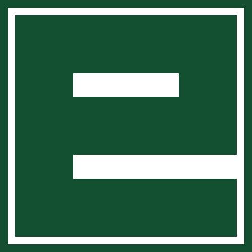

★ Primario
sobre blanco
Sobre verde
corporativo
Sobre verde
oscuro

Ícono solo
(app / favicon)
No usar < 28px
de alto
Logo primario = ícono cuadrado verde + wordmark "EPEC" en verde corporativo (#124e2f). Sobre fondos oscuros, usar versión blanca. Espacio libre mínimo = 0.5× altura del logo. No deformar proporciones.